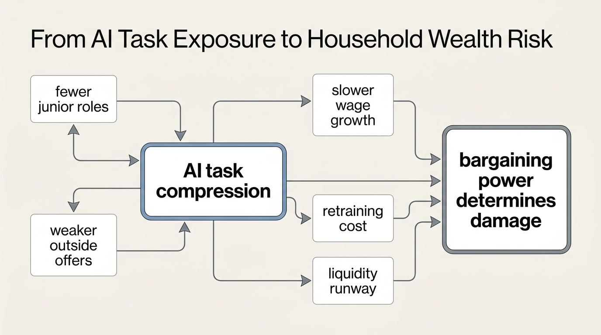

The AI Displacement Timeline
AI rarely announces itself as displacement on day one. It first changes the unit economics of tasks, then the hiring plan, then the promotion ladder, then the salary band. By the time job loss appears clearly in household experience, the wealth damage may already have started.
The most common mistake is to treat AI labor risk as a binary forecast: either the job disappears or it does not. Households need a different model. The relevant timeline starts when tasks become cheaper to perform, not when a formal layoff occurs. A worker can keep the same job title while the market value of the next job, the next raise, or the next entry-level opening weakens underneath it.
Core thesis: AI displacement is better read as a staged balance-sheet risk than as a single employment shock. Task exposure becomes wealth risk when it compresses hiring, reduces bargaining power, narrows early-career entry, or forces retraining before the household has liquidity to absorb transition.

The First Stage Is Task Exposure
OECD analysis has emphasized that AI often changes the tasks inside jobs before it eliminates jobs outright. That distinction matters. A job is a bundle of tasks, relationships, institutional knowledge, accountability, and judgment. AI can compress part of the bundle while leaving the title intact. The worker still appears employed, but the economic floor under the role may have shifted.
Anthropic's Economic Index gives a real-time view of this task layer. Its March 2026 report found that Claude usage remained concentrated in high-value work, with coding still prominent, while use cases broadened across more tasks. The January 2026 report estimated that 49% of jobs had seen AI usage for at least a quarter of their tasks. That is not the same as 49% of jobs being replaceable. It is evidence that task-level AI penetration is already broad enough to affect labor-market pricing before displacement statistics look dramatic.
The Second Stage Is Hiring Compression
AI adoption often shows up first in the margin employers control most easily: hiring. A company does not need to fire an incumbent worker to change the shape of a labor market. It can slow entry-level hiring, consolidate analyst work, raise output expectations, outsource less, or replace a three-person support function with one worker plus tools. The household impact is delayed but real. Fewer entry points today become weaker career ladders tomorrow.
This is why aggregate job-growth forecasts can be true and incomplete. The World Economic Forum's 2025 Future of Jobs work projected large simultaneous creation and displacement by 2030, with 170 million roles created and 92 million displaced across surveyed economies, yielding a net increase. That is useful macro context. It does not protect a household whose specific occupation sits on the wrong side of the churn or whose local employer stops hiring junior roles.
The Third Stage Is Wage And Promotion Pressure
The wealth risk often arrives as slower wage growth rather than unemployment. If AI lets one senior employee supervise more output, the junior ladder can narrow. If routine drafting, analysis, coding, marketing, or support work becomes cheaper, employers may demand more output for the same pay. If the market believes workers in an occupation are more replaceable, outside offers weaken. That lowers bargaining power even for workers who keep their jobs.
BLS projections still show strong demand in computer and information technology occupations, with employment expected to grow much faster than average from 2024 to 2034 and about 317,700 openings per year. That does not contradict AI risk. It shows the segmentation. Some technical roles gain from AI diffusion while other roles inside the same broad labor complex face task compression, fewer junior slots, or lower tolerance for mediocre output.

The Fourth Stage Is Role Redesign
Once AI tools become embedded in workflow, occupations start to split. Some workers become tool-amplified operators who manage larger scopes. Some become reviewers of automated output. Some move closer to clients, regulation, implementation, or physical-world coordination. Some are left doing residual tasks that are harder, less coherent, and less promotable than the old job bundle.
This is where career strategy becomes wealth strategy. The safest position is not simply "learn AI." That phrase is too vague to be useful. The stronger move is to attach AI fluency to a scarce accountability layer: domain judgment, client trust, regulated decision-making, systems integration, distribution, sales responsibility, security, operations, or physical execution. Workers who only compete on tasks that can be specified cleanly are more exposed than workers who own messy interfaces between tools, institutions, and consequences.
Known, Inferred, And Unknown
| Category | Assessment |
|---|---|
| Known | AI exposure is task-level before it is job-level; current evidence shows broad AI use across many work tasks, especially in cognitive and technical domains. |
| Known | Major labor-market forecasts expect both job creation and displacement by 2030, not a clean one-directional collapse. |
| Known | Some technology occupations are projected to grow quickly even as AI changes the content and expectations inside those occupations. |
| Inferred | Household wealth damage is likely to begin through weaker hiring, slower raises, and reduced outside offers before unemployment rises visibly. |
| Unknown | The speed at which AI-native workflows will reduce entry-level demand in specific occupations, cities, and firm sizes. |
A Household Timeline For AI Labor Risk
- 0 to 12 months: map which recurring tasks in the role can be completed faster by current AI tools.
- 12 to 24 months: watch employer hiring behavior, junior role volume, raise discipline, and output-per-worker expectations.
- 24 to 48 months: assume role redesign will matter more than title stability; build evidence of tool-amplified output and domain accountability.
- 48 months and beyond: preserve liquidity for retraining, relocation, or sector shift if the local labor market starts repricing the role.
The point is not to predict one universal displacement date. The point is to identify when household defenses must be in place. A worker who waits for layoffs to prove the risk may lose the window in which transition is cheapest.
The WealthMeter Reading
AI displacement risk should be handled like interest-rate risk or liquidity risk. It is not an ideology. It is an exposure. The relevant question is how much household income depends on tasks whose price is falling, how portable the worker's skills are, and how much runway exists if the next role requires retraining or a temporary pay cut.
For WealthMeter readers, the practical conclusion is strict. Do not anchor on whether your current employer has announced AI layoffs. Look for earlier signals: fewer junior openings, compressed project staffing, higher output targets, lower freelance rates, weaker recruiter demand, and more work routed through AI tooling. Those signals are the timeline. The layoff is only one possible final expression.
Further Reading Inside the Site
This article connects directly to The Career Optionality Gap, The Golden Handcuffs Equation, and The End of the Safe Job Illusion. Together they frame AI labor risk as bargaining power, runway, and transition timing rather than a headline forecast.
Source List
OECD. OECD Employment Outlook 2023: Artificial Intelligence and the Labour Market. Published July 11, 2023.
World Economic Forum. The Future of Jobs Report 2025. Published January 7, 2025.
World Economic Forum. Future of Jobs Report 2025: 78 Million New Job Opportunities by 2030. Published January 8, 2025.
Anthropic. Anthropic Economic Index report: Economic primitives. Published January 15, 2026.
Anthropic. Anthropic Economic Index report: Learning curves. Published March 24, 2026.
U.S. Bureau of Labor Statistics. Computer and Information Technology Occupations. Occupational Outlook Handbook. Accessed April 22, 2026.